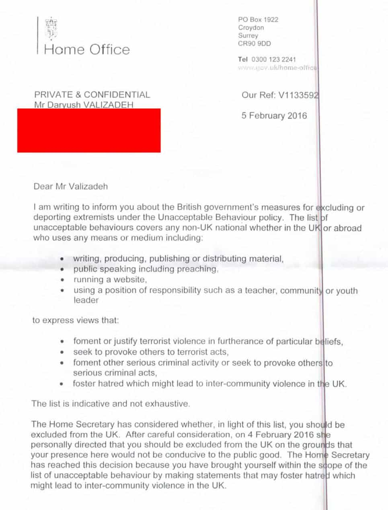
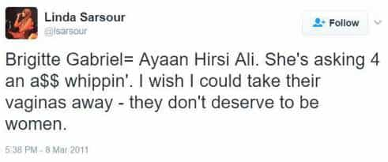

ROK proprietor Roosh Valizadeh has been banned from the United Kingdom (not that he would ever go there for an extended stay) whilst a number of actual bigots have not been. Of course, Roosh’s ban, which is effectively permanent and cannot be appealed, has everything to do with his peaceful opposition to feminism and the way many modern women sexually debase themselves.
Here are four pages from the correspondence Roosh received. He was personally banned by the sitting Prime Minister, Theresa May, when she was serving as Home Secretary in early 2016. Yes, Roosh triggered the female Prime Minister of four countries.

Entirely factual quotes from Roosh like this one were the main basis of the ban:
…When you give a female unlimited choice on which man to have sex with, what type of man does she choose? An exciting man who treats her poorly and does not care for her well-being.
Sadly, millions of “nice guys” who started learning game, many of whom gravitated towards Roosh’s work, know this brutal truth all too well.
Roosh’s satire about “legalizing” rape, inspired by Jonathan Swift’s A Modest Proposal regarding rich people in 18th-century England eating Irish babies, was included as one of the ridiculous reasons for him being banned. Women, Roosh observed, frequently take no precautions when it comes to drinking and meeting new men, allowing the 1 in 1,000 men who are rapists to take advantage of them. Just as we men would not walk home alone through the projects of Harlem at 2am in the morning, women should not be throwing themselves at the mercy of the tiny criminal minority.
Due to his knowledge of Swift’s work, Roosh is perhaps the first person in the history of the world to be at least partially banned from the UK for a rich appreciation of classic English literature. Meanwhile, here are three folks who can presently go to the UK as much as they desire:
1. Linda Sarsour

A darling of the new reincarnation of “intersectional feminism,” New York-based Muslim activist Sarsour has certainly done something Roosh hasn’t by calling for the beating of women she disagrees with. This prominent religious nut advocated physical violence against former Muslim Ayaan Hirsi Ali and Brigitte Gabriel, a Lebanese-American Maronite Christian. Add to this her known associations with former members of terrorist group Hamas.
Sarsour has also argued that at least one student critic of hers should not have been allowed to ask her a question at an event because he was white. But oh no, the real “bigotry” according to the UK Home Office is Roosh criticizing women with words because they have had sex with a billion men and are prone to lie about their sexual histories. That is the real crime apparently in today’s politically correct Western world.
2. Syed Muzaffar Shah Qadri

If Roosh changed the name of Return of Kings to Return of Sharia, his UK entry ban would be immediately revoked.
Qadri praised the assassination of a secular politician in Pakistan and was previously given a ban from preaching in his home country. Yet he’s good enough to be granted a speaking tour in British mosques! Bear in mind that Pakistan has long been accused of turning a blind eye to hundreds, if not thousands of extremist clerics. So if this guy is such a threat there that he needs a muzzle in Karachi or Islamabad, why on earth can he make it to Heathrow Airport in London? Condoning murder will not get you banned from the UK if you belong to the right group.
At the same time, Roosh is now denied entry to Great Britain merely for saying that women are ruining their sexual dignity by taking cock after cock. It is hardly analogous to murdering someone or justifying their murder. I find it very difficult to understand how politicians in Western countries and the bureaucrats serving them are currently better at writing parody material than comedians normally paid to pen these ideas.
3. Yusra Khogali
It’s not the only thing Yusra Khogali has had near her mouth.
This race-baiter and long-term leader of Black Lives Matter Toronto refers to white people as “defects.” Had a white Canadian man called a group such as transgenders, black people, or women “defects” he would have been investigated by the Ontario Human Rights Commission and almost certainly jailed for “transphobia,” racism, or misogyny. Given the huge problems London has faced with its local Black Lives Matter domestic terrorism chapter, the UK Home Office could–and should–have immediately and preemptively banned Khogali from British shores.
But again, Roosh is treated as the scapegoat. What was it this time? Perhaps it was the many occasions he suggested that women, who are the unhappiest they have ever been, should marry and have children young, rather than pursuing university studies and careers. Clearly this is as bad as saying an entire race of people are mutants, animals, or defects!
A man who tries to get men laid is more of a “danger” than terrorist sympathizers and extremists who hate white people

Roosh would not have been banned if he looked like this
In an increasingly lopsided sexual marketplace, Roosh began a writing career focused on helping men to get laid. With that help of his comes a frank assessment of how many women rationalize poor sexual behavior. Pathetically, this exercise in truth-telling is what has gotten him banned from the UK. Simultaneously, real extremists and loons continue to receive a red carpet welcome to London and other cities. What else can we expect from a place that wants to criminalize men talking to women?
Read More: England Set To Ban Talking To Women In Public As “Misogynistic Hate Crime”